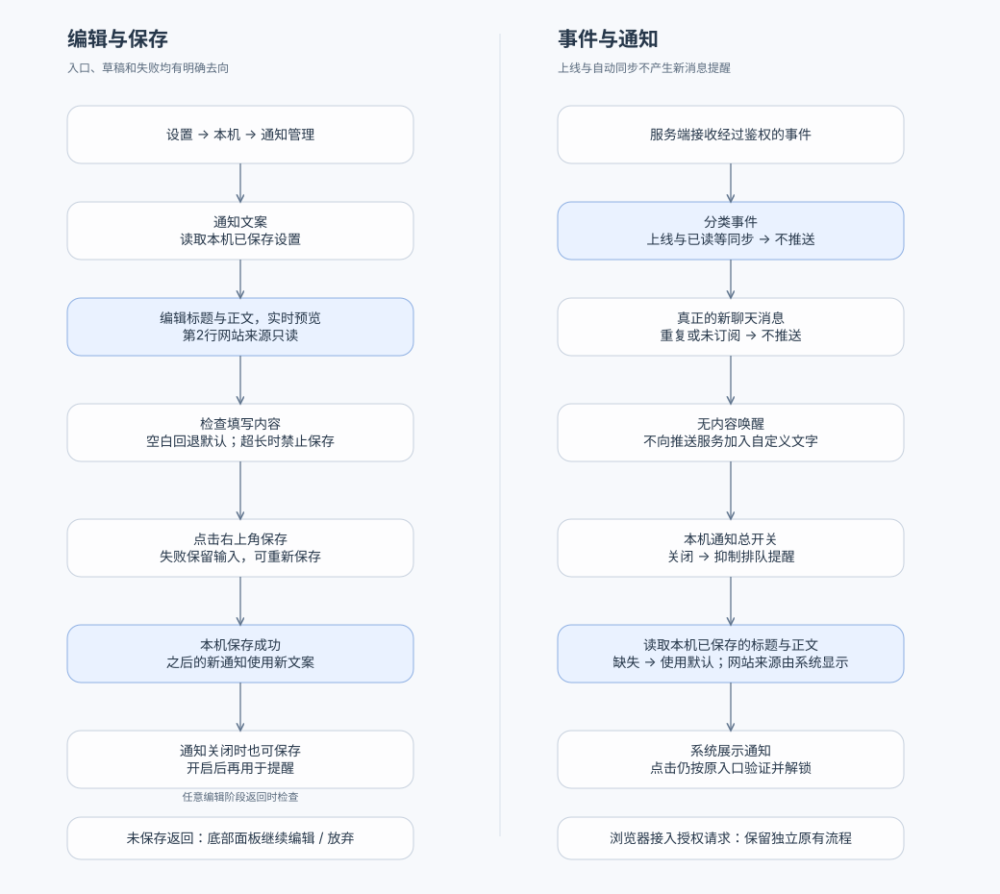

从编辑文案，到收到提醒
左侧说明设置如何保存，右侧说明哪些事件会提醒。网站来源始终由系统显示，用户设置只替换标题与正文。

窄屏可横向查看完整流程。此图与 Mermaid 源码对应。浏览器接入授权请求保留原有独立流程；系统展示与真实送达需正式实现后验证。
左侧说明设置如何保存，右侧说明哪些事件会提醒。网站来源始终由系统显示，用户设置只替换标题与正文。

窄屏可横向查看完整流程。此图与 Mermaid 源码对应。浏览器接入授权请求保留原有独立流程；系统展示与真实送达需正式实现后验证。